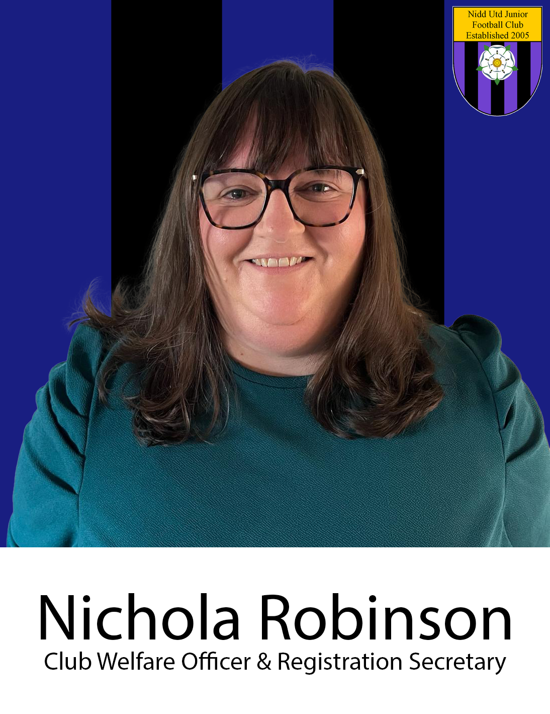
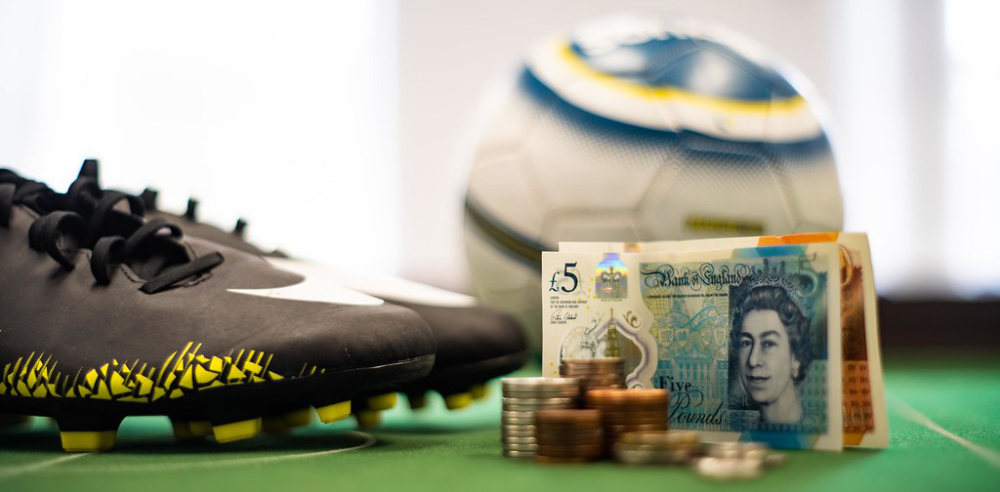
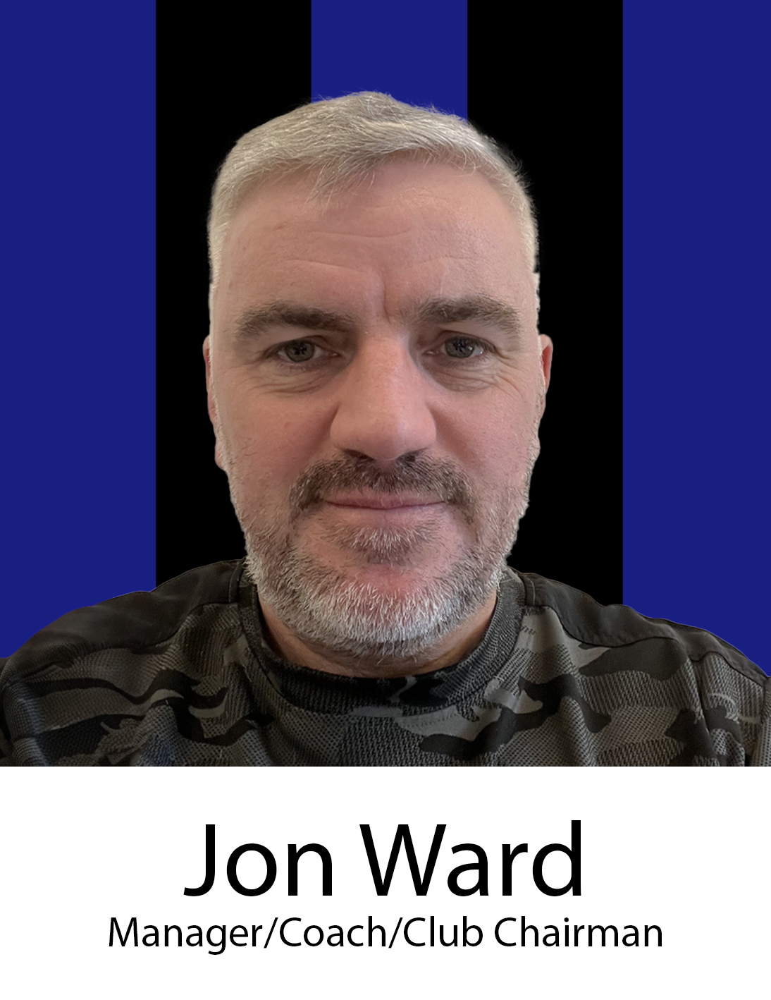
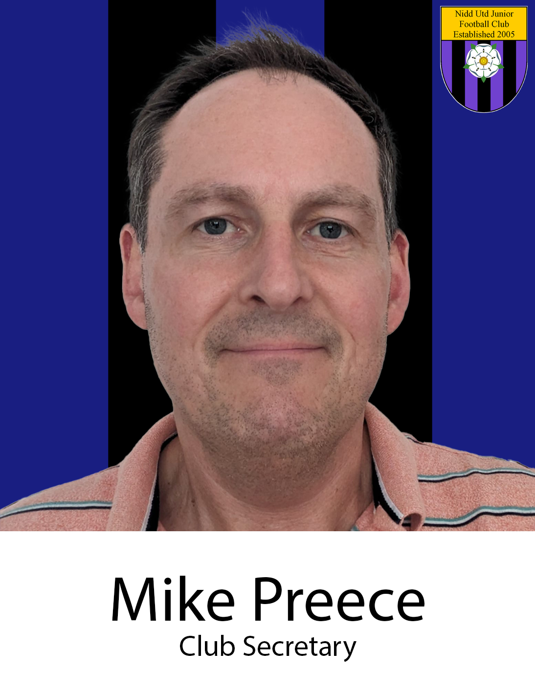
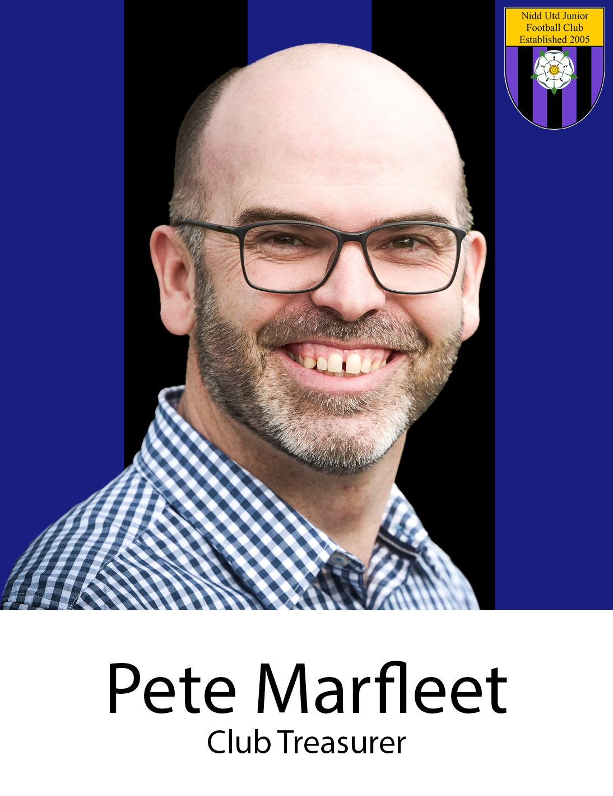

Volunteer Handbook
This volunteer handbook contains a library of information that depending on your role will either be essential reading, or certainly helpful to you. Please take time to browse through the sections below to familiarise yourself with its content.
Contents
- Who We Are
- Safeguarding
- Volunteer Role Descriptions
- Role Expectations
- Training Facilities & Pitches
- Club Shop & Match Kit
- Fees & Finances
- Protecting Member's Data
- Meet the Committee Members
- Onboarding Declaration

Who we Are
Club identity is important for us as a federated club. With teams spread out geographically, we all have to know 'who we are' as a club and continually cultivate and maintain our identity. Each team will obviously look different - different ages, players and of course, your own coaching style. We're not looking for clones, but anyone visiting any team in the club should be able to recognise familiar aspects that identify the team as a Nidd United team. It's more than just the team strip; the way we work out our Club Ethos and Code of Conduct all display who we are.
Read through the following drop downs to discover more about 'who we are'...
Our History
Nidd United was established in 2005 to provide the next stage in football development for young people who play in the Nidderdale friendly league. Taking players primarily from the Nidderdale villages of Ripley, Hampsthwaite & Birstwith, Burton Leonard, Kirkby Malzeard, Pateley Bridge, Bishop Monkton and Scotton. The club is registered to play in the Harrogate & District Junior League from ages 11 (Year 7) upwards
Our Ethos
The Club Ethos is a set of principles that every member of Nidd United, including players, parents, and coaches, agree to promote and uphold when they join the club.
These principles guide us in every decision-making moment at Nidd United. They influence how we treat our teammates, the players coaches choose to play or substitute in a match, our behaviour as supportive parents on the side-line, how the committee manages the club - these principles have an impact on every aspect of Nidd United life.
THE NIDD UNITED ETHOS
PLAY FOOTBALL, PLAY SAFE, PLAY FOR FUN
At Nidd United, we embrace the opportunity to play football because we want to stay active in sport throughout our teenage years. Our goal is to maintain a safe, friendly, and enjoyable environment for all. While we want to be competitive, our focus is not solely on results; we also value other important lessons from the game, like learning self-discipline and dealing with disappointment. We aim to have fun with our teammates, enjoy the game, and grow both as players, coaches and individuals without excessive pressure or anxiety.
PLAY TOGETHER
We are part of our team. We are part of the club. We train hard together; we play hard together. We contribute our time and skills. Giving all players on the squad similar match time is important to us. We will strive to promote a positive team spirit and always foster a sense of togetherness.
PLAY FAIR, PLAY HONEST
We promote good behaviour and respect for others, following the principles outlined in the FA Respect Code of Conduct for Team Officials, Players, and Spectators. We treat everyone with the same respect that we expect to receive. We demonstrate integrity both on and off the field.
PLAY TO LEAVE A LEGACY
What we do today at the club affects those who will come after us. Our goal is to ensure that what we build as a club in our time leaves it in a better place for those who join it in the future.
FAQs about our Club Ethos
What do you mean by 'giving all players similar match time'?
In line with the FA best practice guidance on pages 6 and 16 here, we subscribe to the practice that "All players play a minimum 50%." and believe "All players getting at least half the available game time is a great way to create good team spirit." However, this part of the Club Ethos must be balanced with other parts. For example, if a player never shows up to training (without reasonable reason), then they are not demonstrating the 'Play Together' part and the Coach may decide they should not get the match time they would otherwise have been given, if selected for the squad at all.
Does the Club Ethos allow for streaming?
As a rule, we don't stream at U12s, and rarely do so in teams above that. However, if there is sufficient numbers to allow it, and if it's is desired, streaming may occur but only if it is done in a way that complies with the Club Ethos. We will not stream purely to be competitive, rather to allow each player to train and play at a level that is helpful for their development.
Why doesn't the Club Ethos have more specific details about how to manage the players?
The Club Ethos is not about trying to micro manage a team - we believe in empowering the managers and coaches to lead their team in the best way they feel, but within the spirit of the Club Ethos. That means each team will look different, depending on the Coaches style, but each team should be clearly identifiable as Nidd United because each element of the Club Ethos should be visible within their way of operating.
Club Rules
Everyone who joins the club is asked to agree to abide by the rules below, as a condition of being granted membership. Please familiarise yourself with the Players and Parent/Carers Rules as well as the Coaches/Managers rules:
Nidd United Football Club agree to:
- Provide an inclusive environment, which promotes fair play in line with the Club Ethos.
- Comply with the laws of the game, the rules of The Football Association and the rules of any competition they participate in.
The Coaches/Managers agree to:
- Place the well-being and safety of their players above all other considerations. We acknowledge that every child or young person who plays or participates in football should be able to take part in an enjoyable and safe environment and be protected from poor practice and abuse. Nidd United Football Club recognises that this is the responsibility of every adult involved at our club.
- No coach or assistant shall embark in a one-to-one discussion with an individual player unless in full view of other coaches, and/or players or parents.
- All coaches and assistants should apply the Club Ethos and The Football Association's Coaches' ‘Respect’ Code of Conduct.
Parents/Carers and spectators agree to:
- Practice and promote the Club Ethos at all times.
- Adhere to The Football Association's Spectators and Parents/Carers ‘Respect’ Code of Conduct.
- Let the coaches do their job and not confuse players by telling them what to do.
- Never criticise a player for making a mistake - mistakes are part of learning.
- Be responsible for ensuring their child arrives and is collected promptly.
- Inform the Manager in advance if the child will not be collected by the designated parent/carer.
- Ensure all seasonal player subscriptions are paid within the stated time. Failure to register by the stated date will result in the child not being able to play or train as they will not be insured by the Club.
Players agree to:
- Practice and promote the Club Ethos at all times.
- Read and adhere to The Football Association's Young Players' ‘Respect’ Code of Conduct.
- Never engage in, or tolerate, offensive, insulting, abusive or racist language or behaviour.
- Never be rude to my team-mates, the opposition, the referee, spectators, or my coach/team manager.
- Remove all jewelry prior to training and matches for their own and other player’s health and safety.
Team Familiarisation
While your focus will naturally be on the team you are coaching, we believe it's important to foster a culture of being part of the bigger club at Nidd. Please take a moment to familiarise yourself with the other teams at Nidd, including who is managing and coaching them. You'll find the current teams listed on this page here.
Our Biggest Priority
Every volunteer at the club plays a part in keeping the children in our club safe - it's our number one priority at Nidd United JFC. It's your responsibility to make sure you know our safeguarding policy and procedures, and who to go to if you have questions or concerns about any aspect of safeguarding at the club.
The safeguarding Officer is your first point of contact for any questions or concerns you have about safeguarding. If however your concern is about the safeguarding officer, then your first point of contact should be the Westriding FA Safeguarding Team here.
Don't worry, it's NOT your responsibility to decide if a child is suffering from abuse, but it IS your responsibility to TELL someone if you have cause for concern.
Safeguarding Record keeping by Coaches
Having a record of which children attended the club's training sessions is vitally important and a legal requirement. After every training session all coaches must ensure they complete the attendance record on the FA Events platform as per these instructions here.
Must read Safeguarding & Child Welfare documents
Please make sure you have read and are familiar with the following documents and sites:
Role descriptions
Every volunteer at the club will have roles and responsibilities associated with their position. So it is clear to everyone what your role is (and is not!), we have defined role descriptions for each position at the club.
In the document below, find your role and please refresh yourself with the responsibilities associated with it (feel free to look at the others for your info as well).
Role Qualifications
Each role description in the document above has details of the required qualifications that must be held prior to operating in that role. All courses will be paid for by the club. A summary of all roles and required qualification can be viewed below.
Managers & Coaches Tasks
Role Expectations
Avoiding League Fines
Coaches, please make sure you're familiar with the submissions and timescales required of the League and make sure you submit them on time for each match. Failure to do so correctly on time means the club will be fined by the league at £25 per time.
Club Meetings
For the club to function and develop well, building relationship and communication amongst the volunteers is vital. A key way we achieve that is through our Coaches' and Committee meetings.
These occur on the second Thursday of every other month (Sept, Nov, Jan, Mar, May), 7.45-9.15pm, usually at the Knaresborough Cricket Club bar (yes, there's a free drink on the club). The expectation is that all coaches and committee members will prioritises attending these events, so please put them in your diary now. The Club Secretary will send out an invite and agenda in the weeks before each date.
In addition to these, the Club Committee will meet on the alternate second Thursday of the month (Oct, Dec, Feb, Apr, Jun).
Club Social & AGM
In July every year, we hold a club social BBQ where all members of the club are invited to come and celebrate the season and where awards are presented. Also in July is the AGM, which is held on zoom. Both these should be high priority events for club volunteers.
Joining the club
To be a member of Nidd United, you have to register with the club. This applies to Managers, Coaches, Parents, Players... everyone.
It's important that all volunteers understand the basics of the registration process below so anyone of us can point people who wish to join the club to the right start point
First time membership
For those joining the club for the first time, the following process must be followed:

ongoing membership
For existing members, the Registration Officer will ask them to reserve a place on their team before the start of the new season. This is done by paying for the next season's membership.
Pitches
Nidd United does not currently have our own pitch facilities and all training and match facilities must be hired. The rental of these facilities has to be managed carefully by the committee to ensure they are suitable and sufficient for the team requirements, but also affordable for the club.
How pitches are allocated to teams
At the end of each season, the Coaches Lead works with the coaches to determine the required facilities for the next season. The Coaches Lead looks at the available facilities and books them for the teams.
Please note that team managers or coaches should not negotiate with the facilities providers directly without the approval of the Coaches Lead. This is crucial as facilities are frequently shared between teams, and there may be contractual or financial implications for the wider club that only the Coaches Lead is aware of.
Club Shop & Match Kit
FAQs about the Shop and Kit
Why do we have a club shop?
By handing responsibility for purchasing kits to the Parent-Carers, we save the club a significant logistic burden each season. It also means that players are able to have good quality kit that fits them, rather than the limited choices handed down to them each year.
How do we get sponsors for our team kit?
Mid-season, we remind and encourage all teams to either confirm their current sponsors for the next season or seek new ones. We offer a variety of sponsorship packages (see the sponsors page here for full details and share it with your parents at the mid season point). In the next section on finances, more details are given about how sponsorship money is spent.
What kit do players have to buy?
All players will need to purchase a match day top, shorts and socks, even if they have a team sponsor. (Please note that team match kit sponsorship funds go to the club, not the parent/carers to reduce membership fees - reasons for this are explained in the next finance section). How kit is purchased depends on if the team is sponsored or not (see next FAQs for details). Other clothing and equipment such as jackets, hats etc are available on the club shop but are optional purchases. Players currently train in their own, non club branded training kit and are not required to purchase this from the shop.
How do we order kit if our team is sponsored?
For any sponsored teams, branded kits can NOT be ordered by parents through the website. They must be ordered through a club online order form, which needs to be reviewed and submitted to the supplier by mid July each year. Details of how this is done will be issued to you each year.
How do we order kit if our team is not sponsored?
For any non sponsored teams, kits can must be ordered by parents through the website by mid July each year.
Are there samples to try on?
No, but there are accurate sizing charts on the club shop page.
Do goalies buy their own kit?
If you have a permanent goalie, they should purchase their own goalie match kit. If you have multiple players who share that role, they should buy an outfield match kit and the club will purchase the goalie kit.
Are parent-carers paying more doing it this way?
No. The annual club membership fee for non sponsored teams have been reduced to reflect the purchasing of these kits so that parents-carers are not paying any more than before we had a club shop.
What about shirt numbers?
Players will be assigned a number when they join the club, and they will keep that number for their whole time at the club. Numbers are not associated with player positions. Kit must not be ordered without the player first being issued their squad number.
Fees & Finance
Overview
As a volunteer, it's important for you to have an overview of how the finances of the club are managed, how membership fees are set, how your role may be involved in handling club money and most importantly, our financial control measures that make sure the club funds are used and accounted for legally and with transparency. Along with safeguarding events, financial miss management or fraud is the other big area that will sink a club's reputation so we rightly treat it with great seriousness.
Our approach to finances
We are not looking to make a profit, so we look to put the money we have to good use developing the players in our club. However, we also want to be wise and make sure we safeguard the financial position of the club from year to year. The majority of our income comes from membership fees, although we also apply for grants and look for sponsorship to supplement that income.
Who's responsible?
The Club Committee is responsible for the proper management of the club finances, the Treasurer taking the lead role in that. Outside the committee, every team will have a designated cash float manager who will hold and be held responsible for any authorised expenditure for their team. The club has a financial controls policy, with key elements summarised for you in the FAQs below. Please make sure you full understand each section, your responsibilities, and the financial controls we have in place.
Finance Policy FAQs - Essential Reading
Does team sponsorship funding mean reduced membership fees for our team?
No. Sponsorship is crucial for maintaining low membership fees at our club. It's important to note that funds from Match Kit sponsorship is paid directly to the club, NOT to parents to offset the team membership cost. This strategy ensures our sponsorship program is sustainable. Without it, we would quickly deplete our funds (in the past the club has almost gone bankrupt) and we'd have to raise fees to undesirable levels. Parents' motivation to help you find team match kit sponsors should be the understanding that these efforts help keep fees as low as possible each season. Sponsorship really is needed to cover the significant costs of running the club and should be seen as a whole club effort. The exception to this is where sponsors choose the Team Rain Jacket Package, this is used to purchase the jackets for that team since those are not included in the cost of the club membership. If parents wish to make a private anonymous donation to help reduce team membership fees, it will be gratefully accepted. However, this will not be regarded as formal sponsorship.
Can we claim expenses as a volunteer?
As a general rule, there should be no need for you to incur costs associated with your role. In certain pre approved cases eg for paying the referee, expenses may be claimed.
If we get approval, how do we claim an expense?
We use a online software called ExpensePlus to manage all our club accounts. If you have been approved by the Club Treasurer as someone needing to claim expenses, you will be issued with an ExpensePlus user account.
Can we book our teams into tournaments and claim back the entry fee?
Yes, if it's been pre approved. Any money spent at the club, must get prior approval from the committee to do so. The club funds are there to be used, but must be used in a controlled and budgeted manner. If pre spend approval is not sought, the club reserves the right to refuse reimbursement of the costs.
Do we have to get receipts?
Yes. All expenditure at the club must have a valid invoice or receipt which then needs to be uploaded to ExpensePlus. The club may not reimburse you if receipts are not provided or are lost.
How do we pay referee fees?
Each team will have a designated volunteer who will be responsible for holding a cash advance issued by the Treasurer from the club bank account to their personal bank account. The cash float manager for each team will be responsible for paying the referees, obtaining a receipt of them and then uploading the receipt to ExpensePlus. At the end of the season, any unused balance of the float on ExpensePlus must be paid back to the club.
Every home match, the team assistants responsible for the cash float will need to pay the referee their match fee, as per the rates set by the league here. The default way of doing this it that the a cash float will be transferred to your personal bank account at the start of the season, the balance of which will be recorded on your teams cash float on our accounting software called ExpensePlus. You'll need to get a signed receipt from the referee every time and upload it onto ExpensePlus. If a cash float hasn't been issued to you, and you've been pre authorised to do so, then you'll be able to claim the referee expenses back via an out-of-pocket expense claim.
The video guide below shows you how to do that and a template of the receipt can be downloaded to print here.
Can teams have their own cash floats or bank accounts
Small cash floats from the proceeds of tea/coffee shop sale are permitted but fall outside the club financial controls. Teams must not operate their own bank accounts and any funds over £50 should be paid into the club account to be held in a ring fenced fund for the team.
How are club membership fees set?
The Committee meets at the end of each season to set a budget for the next season. As part of this process they consider the likely operating costs based on the number of teams and facilities needed for them. Membership fees are then set at a level to provide sufficient income to cover the seasons anticipated financial commitments, having been offset by any sponsorship or grants available.
How are club membership fees paid?
In August each year, parent/carers who have registered players for the next season will be sent a membership invoice to pay by direct debit. For teams without sponsored match kits, this will be less the cost of the match kit as they will purchase that themselves via the club shop. For teams with sponsored match kit, the membership fee will have the cost of the kit added on.
What if someone can't afford the membership?
We never want someone to be unable to play football because of the cost of membership fees. The club is able to help on a case-by-case basis either by offering part or full discounts and should you be aware of anyone in that position, please let the Treasurer know.
Protecting personal data
As a club, we collect and process members' personal data. You will likely be involved in handling this data in your role, so it's important that you understand the control measures we have in place to comply with our GDPR obligations. Our GDPR policy is available for you to read here, but the following FAQs will also provide practical help for compliance in your role.
GDPR FAQs
Is this really a big deal?
Yes, it's not only due to legal reasons. At any given time, we may have children or other members who have valid reasons for their personal data to remain private. Their safety could be compromised if this information is made public. Therefore, please take data protection at the club seriously.
Where should we keep our team's personal data?
If you are a team manager or coach, you'll have access to your team's data on the club website. Please do not keep a copy of your team's data anywhere else. This ensures that the data remains in a secure GDPR compliant environment but also you know it will always be up to date. It is accepted that as part of your role, you may need to have mobile or email address data on your mobile phones, but please keep such data on there only for as long as it is relevant to your role.
GDPR traps to avoid
Common areas where often breaches occur are:
Adding people to WhatsApp groups without their permission: this makes their phone number visible to all in the group. Please use an invite link instead so they can opt in to your team's WhatsApp groups.
Batch emailing without using bcc: to avoid publishing emails to everyone, please make sure you use the blind carbon copy address field if you are sending bulk emails to your teams parent-carers.
The Club Committee
If you've not met us yet, here's an introduction to the current Club Committee members. Feel very free to contact any of them at any point using the details on the main contact page here .
 I first became involved with Nidd United in 2022 when my youngest son joined. Quite soon after I started thinking I'd like to be more involved as the clubs ethos matched my belief that we should be offering kids a safe and inclusive space to play sport, especially when there are so many less active distractions. I'm too competitive to be a junior football coach, so when the secretary position on the committee opened up I happily threw my hat in the ring. In my life outside of Nidd United I work for Betty's & Taylors, I am married to Becky and have two teenage boys.
I become involved in Nidd United in 2019 when my youngest son joined, having previously been a coach and part of the Committee at Scotton Scorchers since 2014. I decided to become more involved in football as being a mum to two very sporty boys I was always stood on the side of the pitch and I thought why not get more involved and help out the other club volunteers so I did!! I passed my level 1 coaching qualification in 2016 and now take an active role in managing at the club as well as on the committee managing the registrations and safeguarding children role for the club. Away from football I work locally as part of the Health Visiting team for the Harrogate locality. I am married to Mark and have two teenage boys and a very energetic dog! I am also very heavily involved in our local cricket club.
I joined the club in 2023 when my youngest son became a member. I admired what I saw of the club's ethos and the dedication of the coaching staff so didn't hesitate to join the committee when the treasurer position opened up. I'm enthusiastic about the club developing players in skill and character within a thriving club community. During the week, I work as a Charity Finance Consultant, helping charities streamline their accounting processes. I am married to Beth and we have two teenage boys.
Onboarding Declaration
When you first join the club as a volunteer, you'll be asked to read this handbook and complete the online declaration form below.